Letterforms become the architecture that holds the message together.
Selected work
Мова —
Typographic poster series · Academic project
Мова —
це душа
народу.
“Language is the soul of a people.” — Ivan Ohiienko
An eleven-poster study that turns a philosophical statement into rhythm, tension, repetition, and collective voice.
Enter the series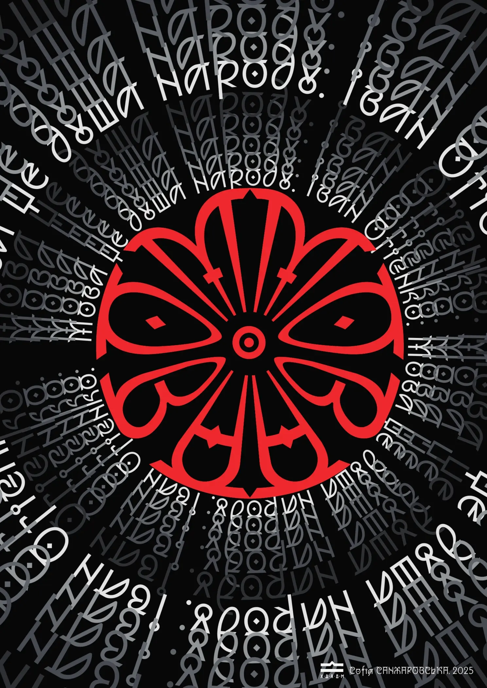
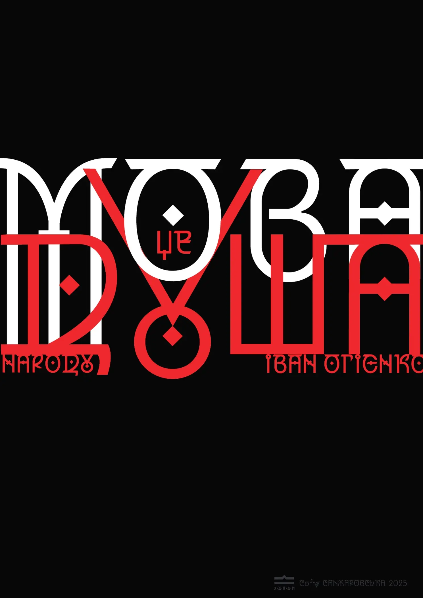
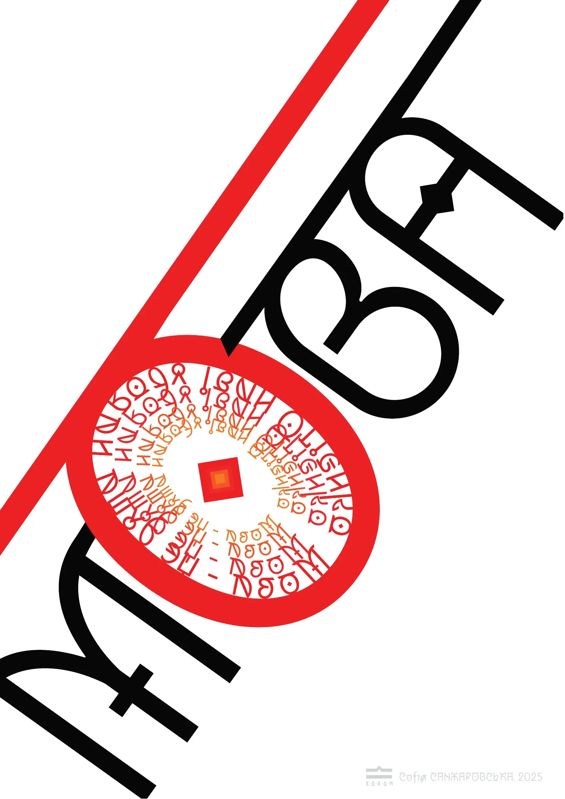
- My role
- Concept, typography, composition & series development
- Context
- Academic poster design project · 2025
- Subject
- Ivan Ohiienko’s statement on language and national identity
- Output
- 11 finished posters in black, white, and signal red
01 / The premise
Language is not a label. It is a living archive.
The series begins with Ivan Ohiienko’s statement, “Language is the soul of a people.” Rather than illustrating it literally, the posters ask what a collective voice can look like: assembled, interrupted, repeated, compressed, and carried forward.
Circles, crossings, and repetitions give the static page an internal rhythm.
One sentence appears in many voices without losing its central meaning.
02 / The visual language
Type carries both meaning and emotion.
The quotation is treated as material. Words stretch into axes, gather into circles, collide at a shared centre, or recede into a field of echoes. The reader first feels the composition, then reconstructs the sentence.
Red / the active voice
A controlled interruption: emphasis, energy, and the point where separate fragments connect.
White / legibility
The phrase remains visible against the dense typographic field.
Black / depth
Negative space gives the letterforms weight and creates room for silence.
03 / Eleven voices
One statement. Eleven states of expression.
The compositions form a family through a strict palette and recurring geometry, but each poster changes the reading experience—from an immediate emblem to a slower field that asks the viewer to trace the sentence.
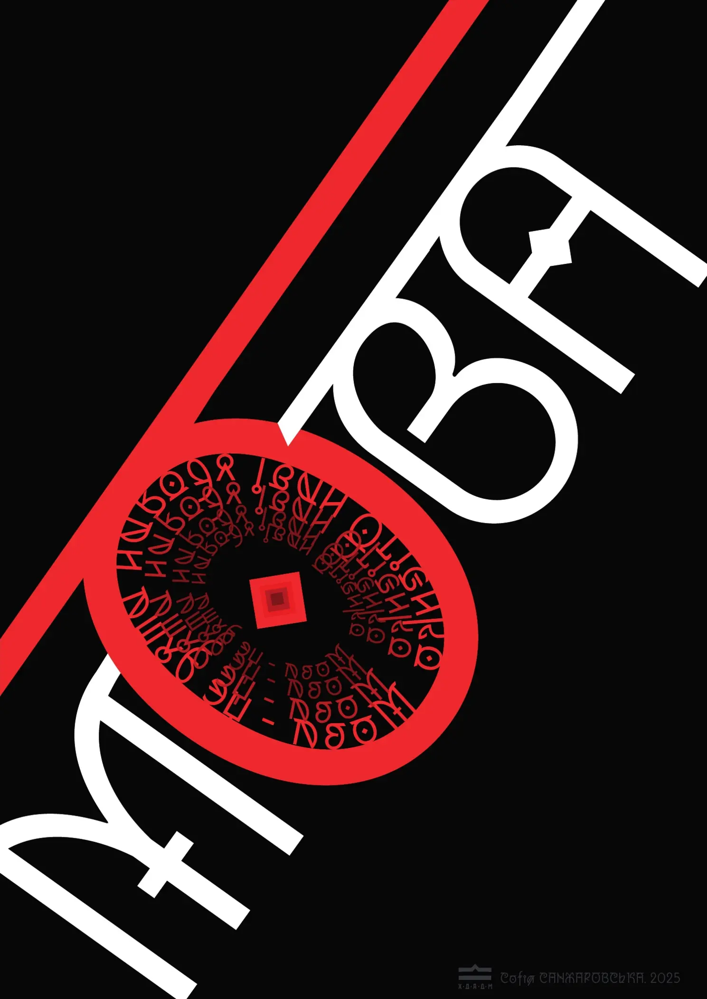
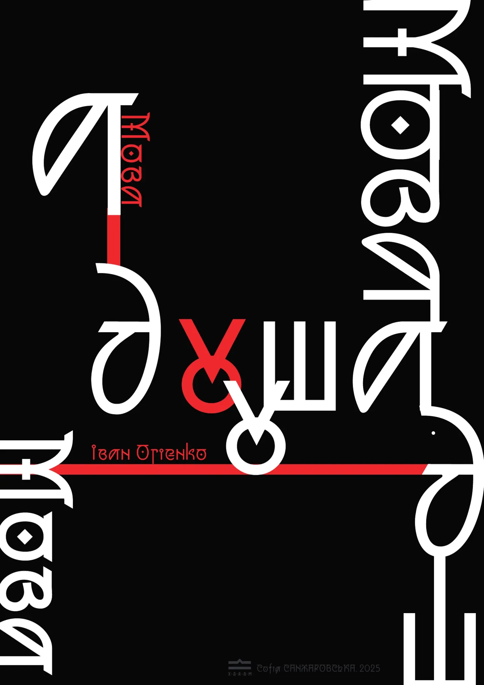
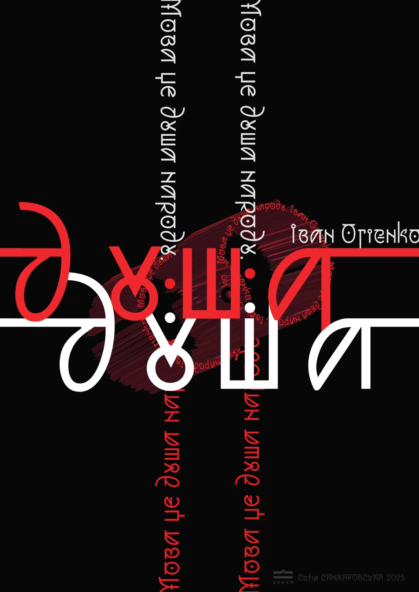
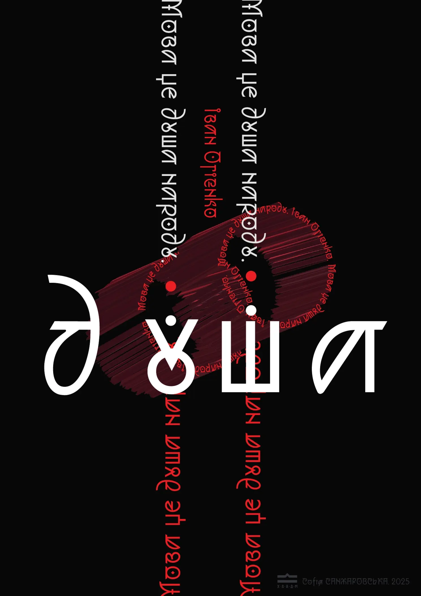
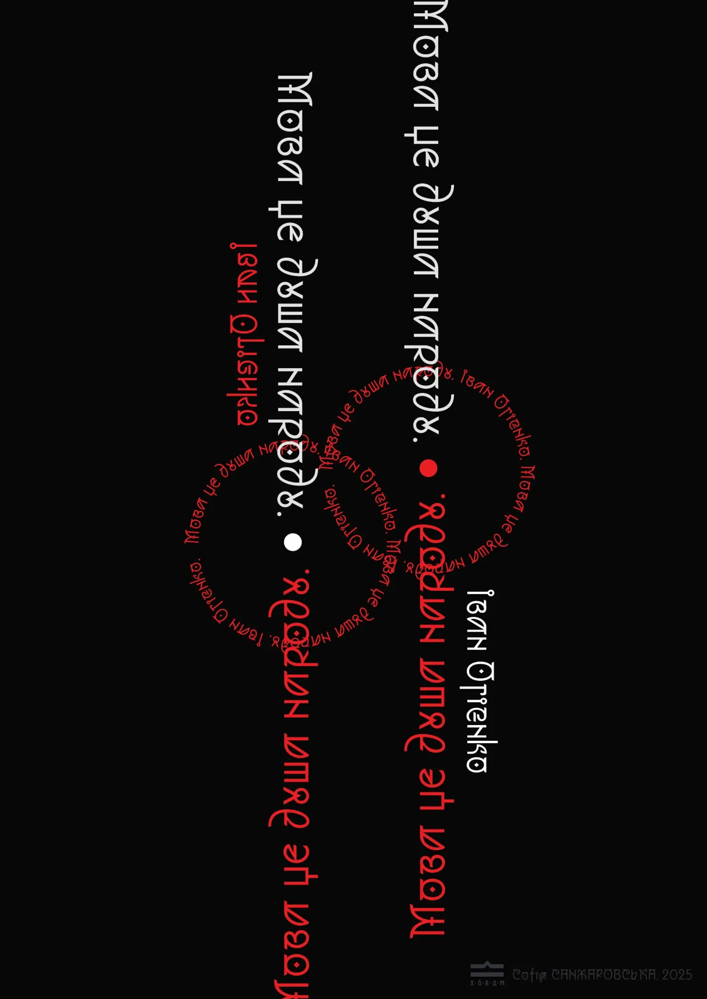
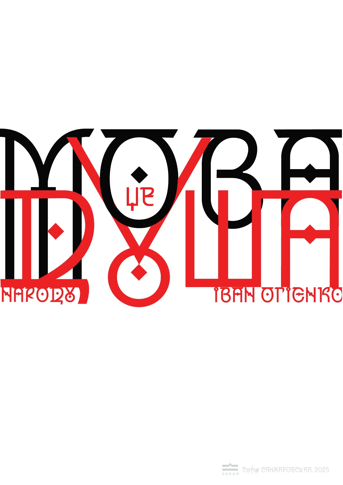
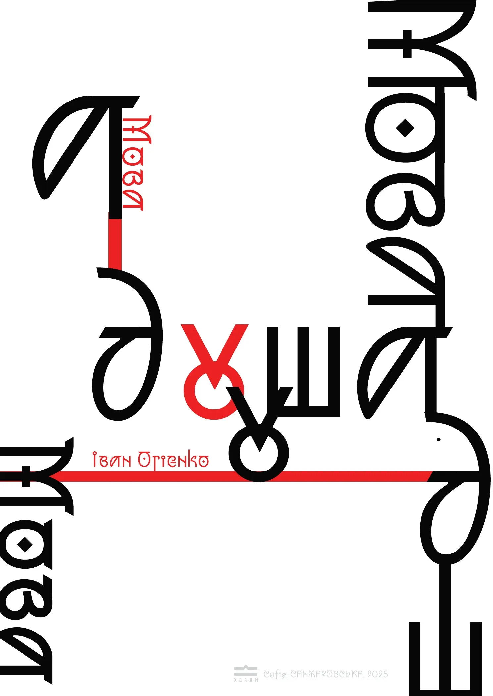
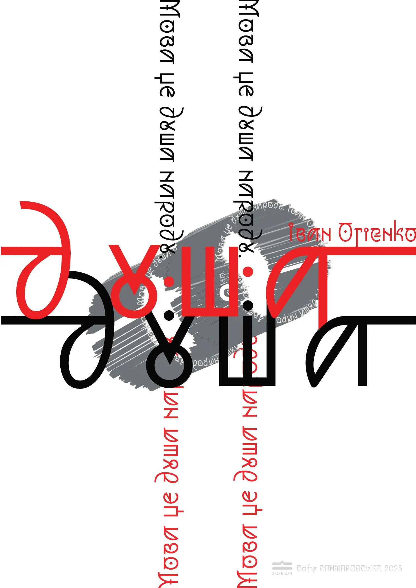
04 / Motion study
The composition moves the way language travels.
The digital presentation animates only transformations already present in the work: circular rotation, directional movement, repetition, and shifts between black and white. The artwork remains intact while the sequence reveals its internal logic.
01 / 04
Structure becomes a voice.05 / The system
Variation without losing the sentence.
The presentation boards test the full family in black, white, and mixed conditions. Across all versions, the recurring red axis, high-contrast palette, and custom letter construction keep the series recognisable.
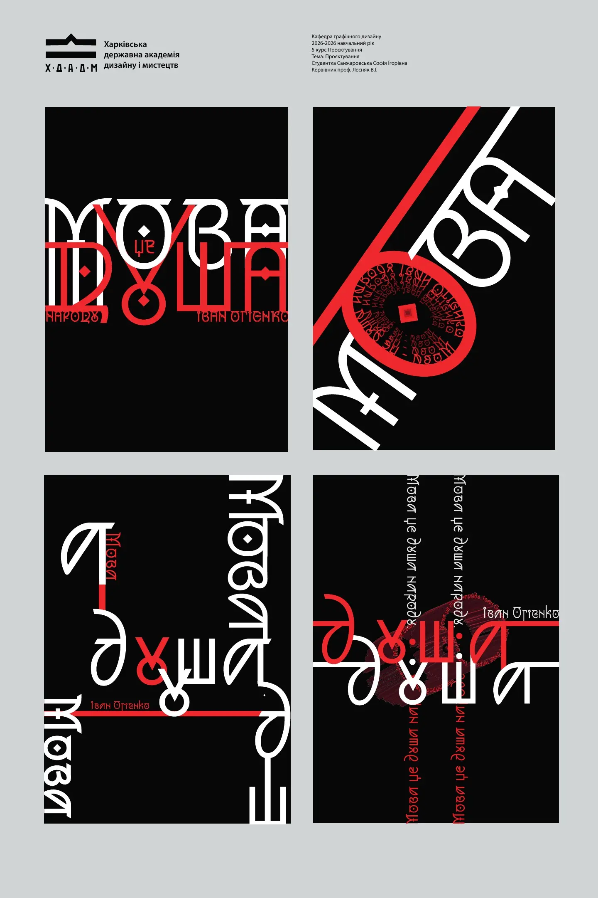
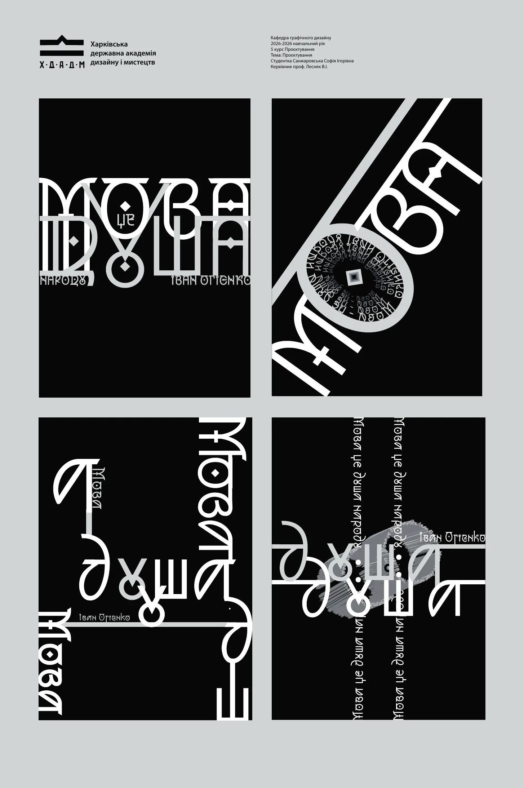
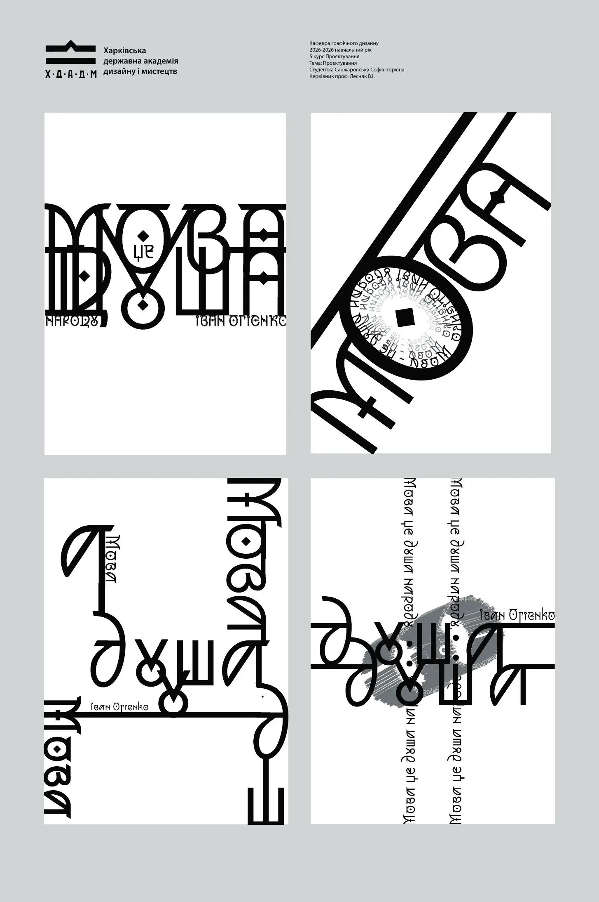
06 / The result
A sentence transformed into a visual chorus.
The completed academic series demonstrates concept-led typography, compositional range, and systematic thinking. Eleven posters retain a shared voice while giving the same philosophical statement a different pace, density, and emotional register.
- 01
- central statement
- 11
- finished posters
- 03
- system colours